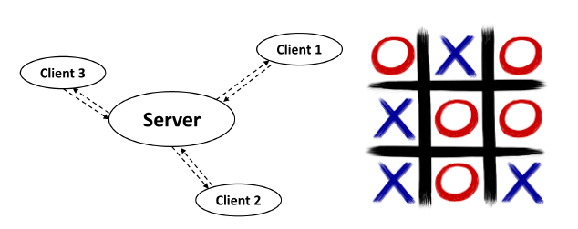

In dit labo implementeren we een spelletje drie-op-een-rij met behulp van sockets in Java.
De server kan de berichten van verschillende clients tegelijk afhandelen. OXO is een spel met twee spelers. Alle logica van het spel wordt gerealiseerd door de server. De taken van de server zijn dus (naast het beheren van de connecties):
Een client stelt één van de twee spelers van het OXO-spel voor en wisselt bericht uit met de server. De server laat de client weten wanneer hij een actie mag uitvoeren. Mogelijke berichten van de server zijn
Als het spel gedaan is, kunnen de spelers beslissen om geconnecteerd te blijven en opnieuw te spelen.